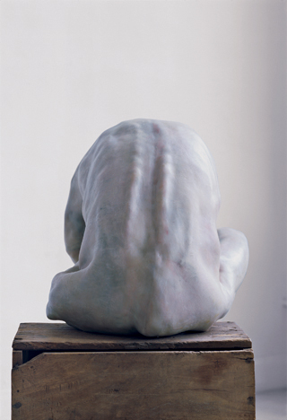
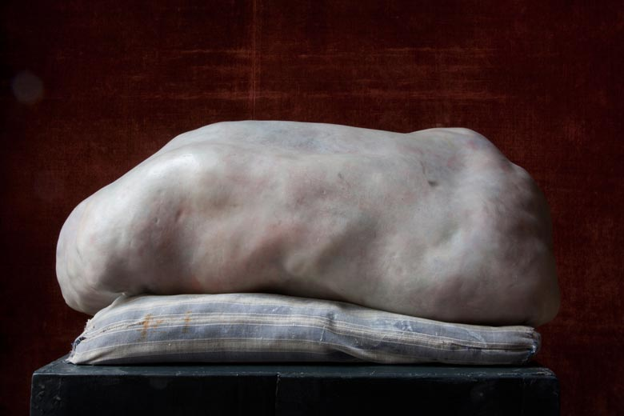
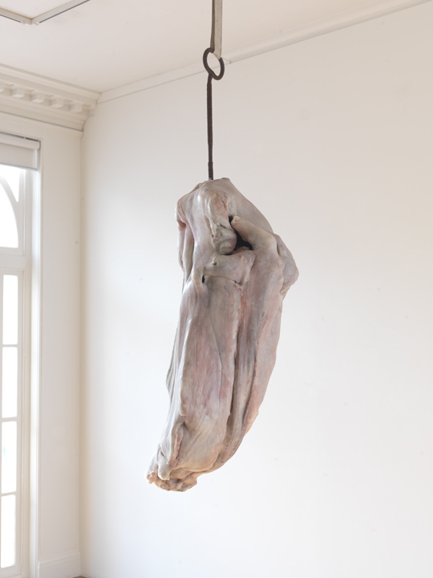

Do Ho Suh
Berlinde De Bruyckere (1964, Ghent, Belgium) is an artist based in Ghent.
She creates sculptures and drawings that refer
to suffering and desire, by revealing the fragility of the
body and the vulnerability of existence. From her conceptual
and abstract sculptures to her figurative works, the diversity
of her forms build a continuity through the frequent use of
materials such as wax, wood, fabric, horse skin and hair.